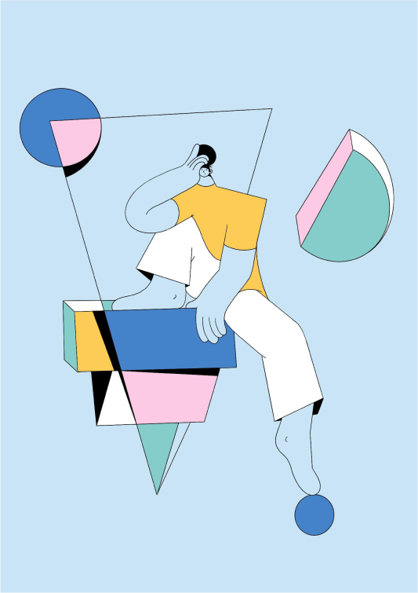
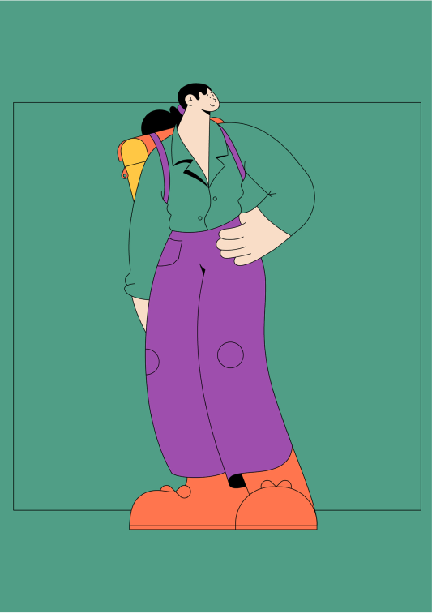
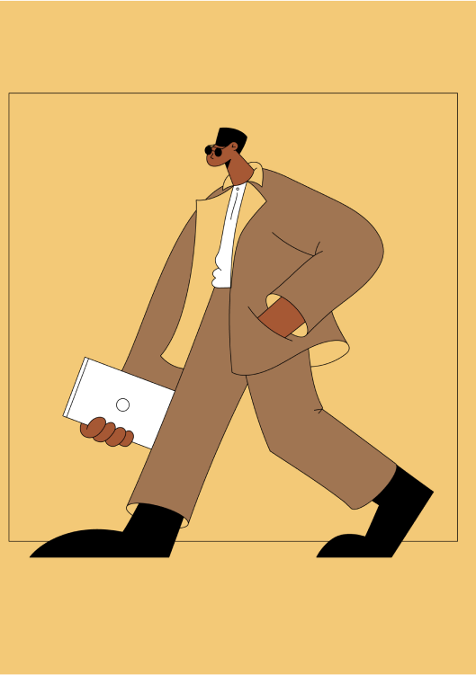
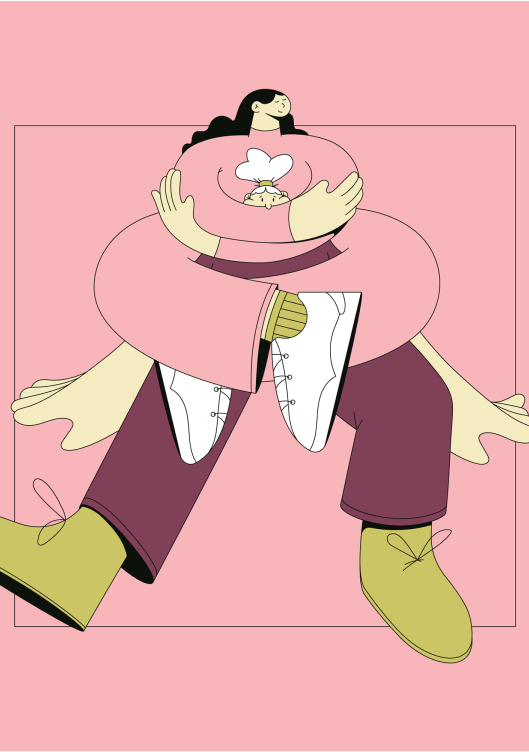

Swedish illustrator, designer and animator Linn Fritz lives and works in London where she creates charmingly clean, precise imagery in a trademark pastel palette for a wide range of editorial and commercial clients. Her neat, fluid line work was honed during her time at Hyper Island, a time which Linn cites as “hands down one of the best experiences” of her life. “My Hyper Island journey completely changed me as a person.” She says, “It pushed me to work harder and gave me the tools to succeed in the real world.” The progressive nature of Hyper Island led Linn to abandon pen and paper and concentrate on what digital could offer her already well-honed drawings. As she puts it, “There’s more freedom drawing digitally, and more room for mistakes.” Alongside her editorial and commercial projects, Linn is the co-founder of Panimation, “a community of equality-driven women, trans and non-binary friends aiming to connect and support each other within the animation industry.” Some of her favorite projects often orbit around her interests of “feminism, clothes, plants and interior” but Linn also looks for a good client relationship, one with trust and creative freedom.